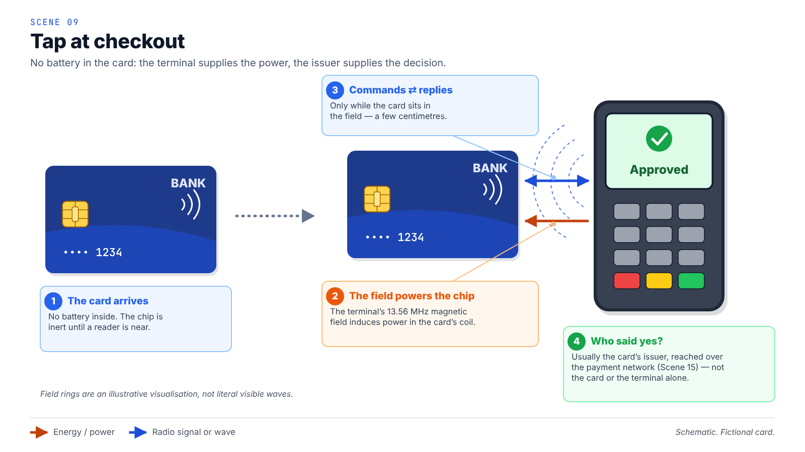
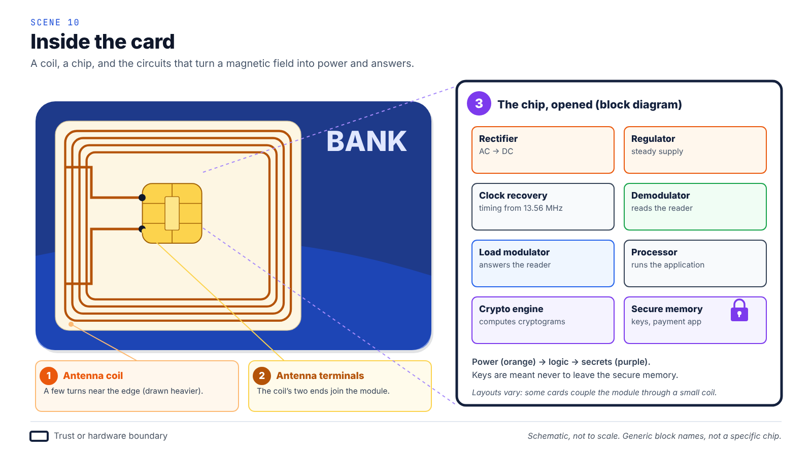
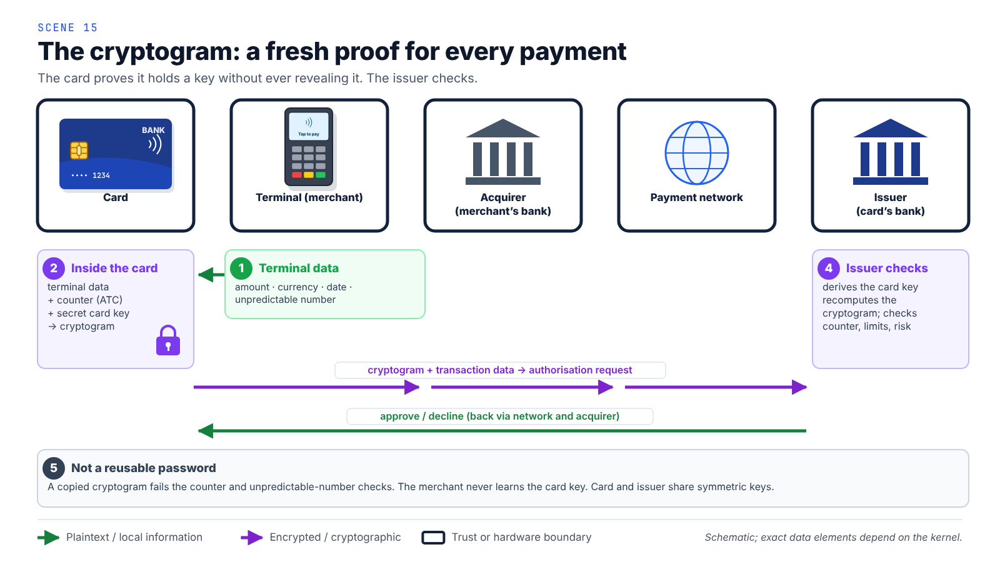
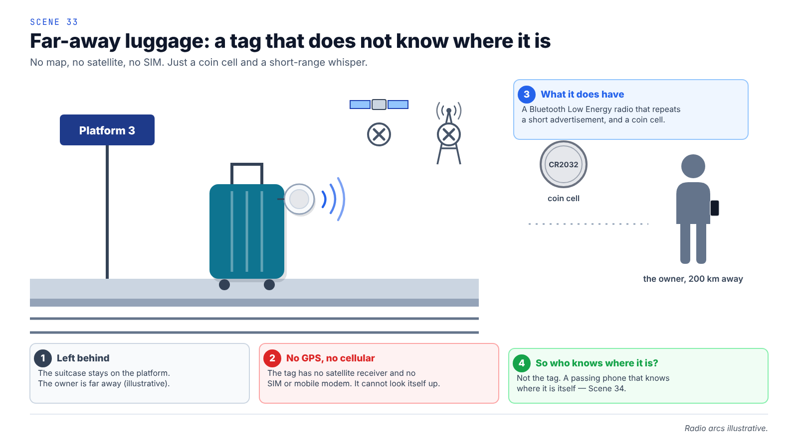
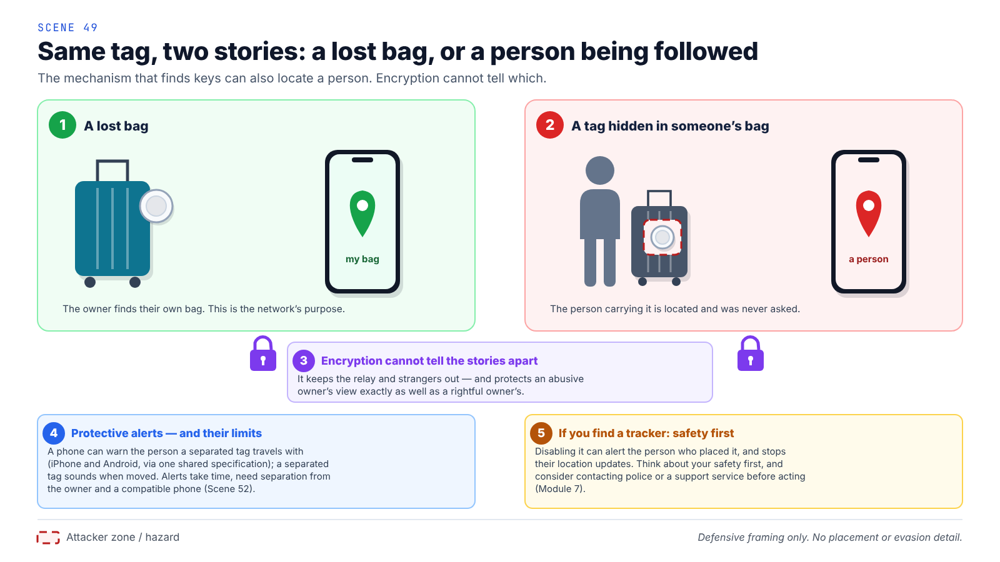
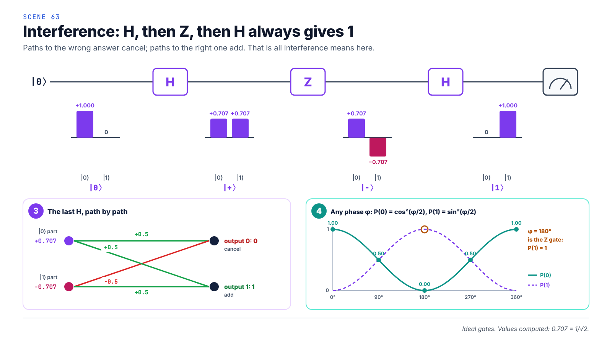

The Invisible Engine, in one page
A card with no battery, a tag that whispers, and the keys that decide who may read a location. Six pictures, in order. Each opens its scene in the full lesson.

1A tap with no batteryA child taps a card at a shop and asks how it works without a battery. The terminal’s invisible magnetic field powers the card for a moment.

2Open the cardInside: a loop of fine wire around the edge and a tiny chip. The loop catches energy; the chip uses it to talk and keep a secret.

3A fresh secret codeEach payment, the card makes a new code that only its bank can check. A copied code is useless next time.

4A tracker that whispersA lost suitcase holds a small tag. It cannot see a map. It whispers, and a stranger’s phone that knows where it is passes the message on, sealed.

5Keys, accounts, peopleWhoever holds the right key can read where the tag has been. That protects the owner — and can expose a person carrying someone else’s tag.

6Waves, qubits, tomorrow’s locksWhy is the code hard to break? The story reaches waves that cancel, qubits, and the new locks being built for a quantum future.
The big idea: energy, signals, data and promises about who may read the data are four different things. Most mistakes come from drawing them as one arrow.
The Invisible Engine · paddyspeaks.com/invisible-engine/ · Pictures are schematic; card numbers and devices are fictional.